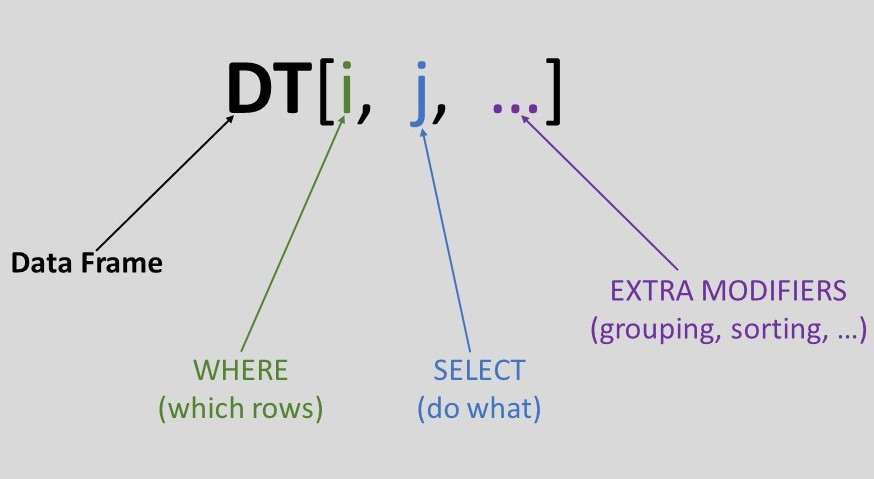

Selecting and Grouping Data with Python Datatable
Contents
Selecting and Grouping Data with Python Datatable#
Datatable#
This is a Python package for manipulating 2-dimensional tabular data structures (aka data frames). It is close in spirit to pandas or SFrame; however we put specific emphasis on speed and big data support. As the name suggests, the package is closely related to R’s data.table and attempts to mimic its core algorithms and API.
I like datatable primarily because of its simple syntax. Yes, there are significant speed gains, which is the primary aim of the package, but the simplicity is compelling.
Do note that datatable is in active development - more features will be added. Check out the documentation for more information.
This introduction focuses on how to select rows, select and perform calculations on columns, and perform aggregations by group.
Datatable syntax#

Short syntax right? Let’s break it down :
- DT refers to the data frame. This is the fundamental building block in datatable. It is a 2-dimensional array with rows and columns, similar to an Excel/SQL table.
- The i part is used for subsetting on rows and shares a similar concept with SQL’s WHERE clause.
- The j part is used to select columns and act on them.
- ... are for extra modifiers, e.g grouping, sorting, joining, etc.
Let’s dive into some examples to see how datatable works. Our data will be the iris dataset.
#import datatable
from datatable import dt, f, by
#read in data
df = dt.fread("Data_files/iris.csv")
df.head()
| sepal_length | sepal_width | petal_length | petal_width | species | |
|---|---|---|---|---|---|
| ▪▪▪▪▪▪▪▪ | ▪▪▪▪▪▪▪▪ | ▪▪▪▪▪▪▪▪ | ▪▪▪▪▪▪▪▪ | ▪▪▪▪ | |
| 0 | 5.1 | 3.5 | 1.4 | 0.2 | setosa |
| 1 | 4.9 | 3 | 1.4 | 0.2 | setosa |
| 2 | 4.7 | 3.2 | 1.3 | 0.2 | setosa |
| 3 | 4.6 | 3.1 | 1.5 | 0.2 | setosa |
| 4 | 5 | 3.6 | 1.4 | 0.2 | setosa |
| 5 | 5.4 | 3.9 | 1.7 | 0.4 | setosa |
| 6 | 4.6 | 3.4 | 1.4 | 0.3 | setosa |
| 7 | 5 | 3.4 | 1.5 | 0.2 | setosa |
| 8 | 4.4 | 2.9 | 1.4 | 0.2 | setosa |
| 9 | 4.9 | 3.1 | 1.5 | 0.1 | setosa |
Notes :
dtrefers to the datatable module.All computations occur within the
[]bracket.dt.freadis a powerful and very fast function for reading in various text files, zip archives, and urls. It can even read in data from the command line.byis a function for grouping.fis a variable that provides a convenient way to reference the data frame’s column within the square brackets. It is really useful when performing computations or creating expressions.In a jupyter notebook, the tab colours for the columns indicate various data types -
blueis for float column,greenis for integer column,redis for string column,yellowis for boolean, whileblackis for object column.
Some basic information about the data frame :
#shape of data
df.shape
(150, 5)
#column names
df.names
('sepal_length', 'sepal_width', 'petal_length', 'petal_width', 'species')
#data types of the columns
df.stypes
(stype.float64, stype.float64, stype.float64, stype.float64, stype.str32)
The i part - Subset Rows#
Select the first three rows#
#We can use python's slicing syntax to get the rows.
df[:3, :]
| sepal_length | sepal_width | petal_length | petal_width | species | |
|---|---|---|---|---|---|
| ▪▪▪▪▪▪▪▪ | ▪▪▪▪▪▪▪▪ | ▪▪▪▪▪▪▪▪ | ▪▪▪▪▪▪▪▪ | ▪▪▪▪ | |
| 0 | 5.1 | 3.5 | 1.4 | 0.2 | setosa |
| 1 | 4.9 | 3 | 1.4 | 0.2 | setosa |
| 2 | 4.7 | 3.2 | 1.3 | 0.2 | setosa |
Notes :
No new syntax, just our knowledge of python’s sequence indexing.
Note also that nothing was selected in the columns. Passing
Noneor...in the j section will work as well.
Select the 2nd, 4th and 8th rows#
#Python has a zero based indexing notation,
#so, we will pass in a list [1,3,7]
df[[1,3,7], :]
| sepal_length | sepal_width | petal_length | petal_width | species | |
|---|---|---|---|---|---|
| ▪▪▪▪▪▪▪▪ | ▪▪▪▪▪▪▪▪ | ▪▪▪▪▪▪▪▪ | ▪▪▪▪▪▪▪▪ | ▪▪▪▪ | |
| 0 | 4.9 | 3 | 1.4 | 0.2 | setosa |
| 1 | 4.6 | 3.1 | 1.5 | 0.2 | setosa |
| 2 | 5 | 3.4 | 1.5 | 0.2 | setosa |
Find rows where species == “versicolor”#
This is an expression. How do we talk to the dataframe to filter for only rows where the species column is equal to versicolor? Through the f variable :
result = df[f.species == "versicolor", :]
result.head()
| sepal_length | sepal_width | petal_length | petal_width | species | |
|---|---|---|---|---|---|
| ▪▪▪▪▪▪▪▪ | ▪▪▪▪▪▪▪▪ | ▪▪▪▪▪▪▪▪ | ▪▪▪▪▪▪▪▪ | ▪▪▪▪ | |
| 0 | 7 | 3.2 | 4.7 | 1.4 | versicolor |
| 1 | 6.4 | 3.2 | 4.5 | 1.5 | versicolor |
| 2 | 6.9 | 3.1 | 4.9 | 1.5 | versicolor |
| 3 | 5.5 | 2.3 | 4 | 1.3 | versicolor |
| 4 | 6.5 | 2.8 | 4.6 | 1.5 | versicolor |
| 5 | 5.7 | 2.8 | 4.5 | 1.3 | versicolor |
| 6 | 6.3 | 3.3 | 4.7 | 1.6 | versicolor |
| 7 | 4.9 | 2.4 | 3.3 | 1 | versicolor |
| 8 | 6.6 | 2.9 | 4.6 | 1.3 | versicolor |
| 9 | 5.2 | 2.7 | 3.9 | 1.4 | versicolor |
Notes :
We create a boolean expression, using the
fsymbol, to select rows that match the condition.
Find rows where species == “versicolor” and sepal_length == 7#
df[(f.species == "versicolor") & (f.sepal_length == 7), :]
| sepal_length | sepal_width | petal_length | petal_width | species | |
|---|---|---|---|---|---|
| ▪▪▪▪▪▪▪▪ | ▪▪▪▪▪▪▪▪ | ▪▪▪▪▪▪▪▪ | ▪▪▪▪▪▪▪▪ | ▪▪▪▪ | |
| 0 | 7 | 3.2 | 4.7 | 1.4 | versicolor |
Notes :
Again, a filter expression is needed -> we use the
fsymbol to access the columns and create our expression.Note also that we have two conditions; as such, each condition is wrapped in parentheses to ensure the operator precedence.
Operator
&forand,|foror.You can chain as many conditions as needed within the
isection.
The j part - Columns#
Select species, petal_width and petal_length columns#
#Simply pass a list of the names in the j section
result = df[:, ["species","petal_width","petal_length"]]
result.head()
| species | petal_width | petal_length | |
|---|---|---|---|
| ▪▪▪▪ | ▪▪▪▪▪▪▪▪ | ▪▪▪▪▪▪▪▪ | |
| 0 | setosa | 0.2 | 1.4 |
| 1 | setosa | 0.2 | 1.4 |
| 2 | setosa | 0.2 | 1.3 |
| 3 | setosa | 0.2 | 1.5 |
| 4 | setosa | 0.2 | 1.4 |
| 5 | setosa | 0.4 | 1.7 |
| 6 | setosa | 0.3 | 1.4 |
| 7 | setosa | 0.2 | 1.5 |
| 8 | setosa | 0.2 | 1.4 |
| 9 | setosa | 0.1 | 1.5 |
Notes :
Note that we passed
:in theisection to indicate that all rows will be selected.Noneor...works fine as well.
Select the last two columns#
#Again, we use python's indexing syntax
result = df[:, -2:]
result.head()
| petal_width | species | |
|---|---|---|
| ▪▪▪▪▪▪▪▪ | ▪▪▪▪ | |
| 0 | 0.2 | setosa |
| 1 | 0.2 | setosa |
| 2 | 0.2 | setosa |
| 3 | 0.2 | setosa |
| 4 | 0.2 | setosa |
| 5 | 0.4 | setosa |
| 6 | 0.3 | setosa |
| 7 | 0.2 | setosa |
| 8 | 0.2 | setosa |
| 9 | 0.1 | setosa |
Select only columns whose names end with length#
result = df[:, [col.endswith("length") for col in df.names]]
result.head()
| sepal_length | petal_length | |
|---|---|---|
| ▪▪▪▪▪▪▪▪ | ▪▪▪▪▪▪▪▪ | |
| 0 | 5.1 | 1.4 |
| 1 | 4.9 | 1.4 |
| 2 | 4.7 | 1.3 |
| 3 | 4.6 | 1.5 |
| 4 | 5 | 1.4 |
| 5 | 5.4 | 1.7 |
| 6 | 4.6 | 1.4 |
| 7 | 5 | 1.5 |
| 8 | 4.4 | 1.4 |
| 9 | 4.9 | 1.5 |
Notes:
For this, we pass a list comprehension to extract the matches. Again, we are using familar python constructs.
Calculate the mean value of sepal_length#
df[:, dt.mean(f.sepal_length)]
| sepal_length | |
|---|---|
| ▪▪▪▪▪▪▪▪ | |
| 0 | 5.84333 |
Here, we have to compute a value, and as such, the
fsymbol comes into play.To get the average, we use the
meanfunction from the datatable module.
REMEMBER: Any time you want to compute a value or create an expression, make use of the f symbol.
TIP : We can export the column names and use them, instead of the f symbol :
sepal_length, *_ = df.export_names()
#calculate the mean value of sepal_length
df[:, dt.mean(sepal_length)]
| sepal_length | |
|---|---|
| ▪▪▪▪▪▪▪▪ | |
| 0 | 5.84333 |
We can also export only the names we need :
petal_width, petal_length = df[:, [2,3]].export_names()
#calculate mean value of petal_width and petal_length
df[:, dt.mean([petal_width, petal_length])]
| petal_length | petal_width | |
|---|---|---|
| ▪▪▪▪▪▪▪▪ | ▪▪▪▪▪▪▪▪ | |
| 0 | 3.758 | 1.19933 |
Notes:
To get aggregates of more than one column, pass a list of column names prefixed with the
fsymbol to j.Alternatively, you can pass a dictionary of key - value pairs, where the keys will be the new column names, and the values are the computed columns.
For the rest of the tutorial, I will continue using f-expressions, as they are convenient to use, without having to explicitly export column names.
Select only species and petal_length columns for rows where the petal_length is greater than 1.5#
result = df[f.petal_length > 1.5, ["species", "petal_length"]]
result.head()
| species | petal_length | |
|---|---|---|
| ▪▪▪▪ | ▪▪▪▪▪▪▪▪ | |
| 0 | setosa | 1.7 |
| 1 | setosa | 1.6 |
| 2 | setosa | 1.7 |
| 3 | setosa | 1.7 |
| 4 | setosa | 1.7 |
| 5 | setosa | 1.9 |
| 6 | setosa | 1.6 |
| 7 | setosa | 1.6 |
| 8 | setosa | 1.6 |
| 9 | setosa | 1.6 |
Select only string columns#
result = df[:, f[str]]
result.head()
| species | |
|---|---|
| ▪▪▪▪ | |
| 0 | setosa |
| 1 | setosa |
| 2 | setosa |
| 3 | setosa |
| 4 | setosa |
| 5 | setosa |
| 6 | setosa |
| 7 | setosa |
| 8 | setosa |
| 9 | setosa |
Notes:
The above concept is applicable for any data type that we wish to include or exclude from the dataframe
Convert petal_length from float to integer#
Option 1. Direct assignment :
result = df.copy()
result["petal_length"].stype
stype.float64
#change column type
result["petal_length"] = dt.int32
#check new data type
result[:, f.petal_length].stype
stype.int32
Option 2. Use the
updatemethod. The process is done in-place; no assignment is needed :
res = df.copy()
res["petal_length"].stype
stype.float64
#update is an inplace operation
res[:, dt.update(petal_length = dt.int32(f.petal_length))]
#check data type after update
res['petal_length'].stype
stype.int32
TIP : The update method allows creation of new columns, or updating existing ones.
Multiply petal_length by 2 and add it as a new column petal_double#
Option 1. Direct Assignment :
sol_1 = df.copy()
sol_1["petal_double"] = sol_1[:, 2 * f.petal_length]
sol_1.head(5)
| sepal_length | sepal_width | petal_length | petal_width | species | petal_double | |
|---|---|---|---|---|---|---|
| ▪▪▪▪▪▪▪▪ | ▪▪▪▪▪▪▪▪ | ▪▪▪▪▪▪▪▪ | ▪▪▪▪▪▪▪▪ | ▪▪▪▪ | ▪▪▪▪▪▪▪▪ | |
| 0 | 5.1 | 3.5 | 1.4 | 0.2 | setosa | 2.8 |
| 1 | 4.9 | 3 | 1.4 | 0.2 | setosa | 2.8 |
| 2 | 4.7 | 3.2 | 1.3 | 0.2 | setosa | 2.6 |
| 3 | 4.6 | 3.1 | 1.5 | 0.2 | setosa | 3 |
| 4 | 5 | 3.6 | 1.4 | 0.2 | setosa | 2.8 |
Option 2. Use the
extendmethod and pass in a dictionary of key value pairs, where the key is the new column name, and the value is the computed column:
sol_2 = df.copy()
#f[:] means the entire columns are selected
sol_2 = sol_2[:, f[:].extend({"petal_double" : 2 * f.petal_length})]
sol_2.head(5)
| sepal_length | sepal_width | petal_length | petal_width | species | petal_double | |
|---|---|---|---|---|---|---|
| ▪▪▪▪▪▪▪▪ | ▪▪▪▪▪▪▪▪ | ▪▪▪▪▪▪▪▪ | ▪▪▪▪▪▪▪▪ | ▪▪▪▪ | ▪▪▪▪▪▪▪▪ | |
| 0 | 5.1 | 3.5 | 1.4 | 0.2 | setosa | 2.8 |
| 1 | 4.9 | 3 | 1.4 | 0.2 | setosa | 2.8 |
| 2 | 4.7 | 3.2 | 1.3 | 0.2 | setosa | 2.6 |
| 3 | 4.6 | 3.1 | 1.5 | 0.2 | setosa | 3 |
| 4 | 5 | 3.6 | 1.4 | 0.2 | setosa | 2.8 |
Option 3. The
updatemethod :
sol_3 = df.copy()
sol_3[:, dt.update(petal_double = 2 * f.petal_length)]
sol_3.head(5)
| sepal_length | sepal_width | petal_length | petal_width | species | petal_double | |
|---|---|---|---|---|---|---|
| ▪▪▪▪▪▪▪▪ | ▪▪▪▪▪▪▪▪ | ▪▪▪▪▪▪▪▪ | ▪▪▪▪▪▪▪▪ | ▪▪▪▪ | ▪▪▪▪▪▪▪▪ | |
| 0 | 5.1 | 3.5 | 1.4 | 0.2 | setosa | 2.8 |
| 1 | 4.9 | 3 | 1.4 | 0.2 | setosa | 2.8 |
| 2 | 4.7 | 3.2 | 1.3 | 0.2 | setosa | 2.6 |
| 3 | 4.6 | 3.1 | 1.5 | 0.2 | setosa | 3 |
| 4 | 5 | 3.6 | 1.4 | 0.2 | setosa | 2.8 |
Drop the sepal_width column from the table#
Option 1. Use the
delkeyword :
del sol_1["sepal_width"]
sol_1.names
('sepal_length', 'petal_length', 'petal_width', 'species', 'petal_double')
sol_1.head(3)
| sepal_length | petal_length | petal_width | species | petal_double | |
|---|---|---|---|---|---|
| ▪▪▪▪▪▪▪▪ | ▪▪▪▪▪▪▪▪ | ▪▪▪▪▪▪▪▪ | ▪▪▪▪ | ▪▪▪▪▪▪▪▪ | |
| 0 | 5.1 | 1.4 | 0.2 | setosa | 2.8 |
| 1 | 4.9 | 1.4 | 0.2 | setosa | 2.8 |
| 2 | 4.7 | 1.3 | 0.2 | setosa | 2.6 |
Option 2. Use the remove method :
sol_3 = sol_3[:, f[:].remove(f.sepal_width)]
sol_3.names
('sepal_length', 'petal_length', 'petal_width', 'species', 'petal_double')
sol_3.head(3)
| sepal_length | petal_length | petal_width | species | petal_double | |
|---|---|---|---|---|---|
| ▪▪▪▪▪▪▪▪ | ▪▪▪▪▪▪▪▪ | ▪▪▪▪▪▪▪▪ | ▪▪▪▪ | ▪▪▪▪▪▪▪▪ | |
| 0 | 5.1 | 1.4 | 0.2 | setosa | 2.8 |
| 1 | 4.9 | 1.4 | 0.2 | setosa | 2.8 |
| 2 | 4.7 | 1.3 | 0.2 | setosa | 2.6 |
Extra Modifiers#
Notes :
We will focus on
groupingandsorting.
Sort data by sepal_width#
outcome = df[:, :, dt.sort('sepal_width')]
outcome.head()
| sepal_length | sepal_width | petal_length | petal_width | species | |
|---|---|---|---|---|---|
| ▪▪▪▪▪▪▪▪ | ▪▪▪▪▪▪▪▪ | ▪▪▪▪▪▪▪▪ | ▪▪▪▪▪▪▪▪ | ▪▪▪▪ | |
| 0 | 5 | 2 | 3.5 | 1 | versicolor |
| 1 | 6 | 2.2 | 4 | 1 | versicolor |
| 2 | 6.2 | 2.2 | 4.5 | 1.5 | versicolor |
| 3 | 6 | 2.2 | 5 | 1.5 | virginica |
| 4 | 4.5 | 2.3 | 1.3 | 0.3 | setosa |
| 5 | 5.5 | 2.3 | 4 | 1.3 | versicolor |
| 6 | 6.3 | 2.3 | 4.4 | 1.3 | versicolor |
| 7 | 5 | 2.3 | 3.3 | 1 | versicolor |
| 8 | 4.9 | 2.4 | 3.3 | 1 | versicolor |
| 9 | 5.5 | 2.4 | 3.8 | 1.1 | versicolor |
That’s all there is to it, just pass in the column name, either as a string or as an
fexpression.By default, sorting is in ascending order.
Sort by sepal_width ascending and petal_width descending#
outcome = df[:, :, dt.sort([f.sepal_width, -f.petal_width])]
outcome.head()
| sepal_length | sepal_width | petal_length | petal_width | species | |
|---|---|---|---|---|---|
| ▪▪▪▪▪▪▪▪ | ▪▪▪▪▪▪▪▪ | ▪▪▪▪▪▪▪▪ | ▪▪▪▪▪▪▪▪ | ▪▪▪▪ | |
| 0 | 5 | 2 | 3.5 | 1 | versicolor |
| 1 | 6.2 | 2.2 | 4.5 | 1.5 | versicolor |
| 2 | 6 | 2.2 | 5 | 1.5 | virginica |
| 3 | 6 | 2.2 | 4 | 1 | versicolor |
| 4 | 5.5 | 2.3 | 4 | 1.3 | versicolor |
| 5 | 6.3 | 2.3 | 4.4 | 1.3 | versicolor |
| 6 | 5 | 2.3 | 3.3 | 1 | versicolor |
| 7 | 4.5 | 2.3 | 1.3 | 0.3 | setosa |
| 8 | 5.5 | 2.4 | 3.8 | 1.1 | versicolor |
| 9 | 4.9 | 2.4 | 3.3 | 1 | versicolor |
Notes :
When sorting on multiple columns, pass a list of the column names to the
sortfunction.The
-sign in front ofpetal_widthinstructs data table to sort in descending order. The-is symbolic and no actual negation occurs; as such it can be used on string columns.Note that at this point, we had to switch to
f-expressionto get the desired result.
Group By - Get the average sepal length per species#
df[:, dt.mean(f.sepal_length), by("species")]
| species | sepal_length | |
|---|---|---|
| ▪▪▪▪ | ▪▪▪▪▪▪▪▪ | |
| 0 | setosa | 5.006 |
| 1 | versicolor | 5.936 |
| 2 | virginica | 6.588 |
Notes :
byis the primary way to group data in the datatable.Since we are computing a value (average), the
fsymbol is used.
Group By - Get the average sepal length and petal length per species#
df[:, dt.mean([f.sepal_length, f.petal_length]), by("species")]
| species | sepal_length | petal_length | |
|---|---|---|---|
| ▪▪▪▪ | ▪▪▪▪▪▪▪▪ | ▪▪▪▪▪▪▪▪ | |
| 0 | setosa | 5.006 | 1.462 |
| 1 | versicolor | 5.936 | 4.26 |
| 2 | virginica | 6.588 | 5.552 |
Group By - Filter the rows for sepal_width greater than or equal to 3, then get the average sepal length and petal length per species#
df[f.sepal_width>=3,:][:,dt.mean([f.sepal_length, f.petal_length]), by("species")]
| species | sepal_length | petal_length | |
|---|---|---|---|
| ▪▪▪▪ | ▪▪▪▪▪▪▪▪ | ▪▪▪▪▪▪▪▪ | |
| 0 | setosa | 5.02917 | 1.46667 |
| 1 | versicolor | 6.21875 | 4.54375 |
| 2 | virginica | 6.76897 | 5.64138 |
Notes :
At the moment, computation on
i,jandbyat the same time is not yet implemented. As such, we have to break down the steps into two parts.This also shows the chaining capabilities of datatable; simply put the next
[], anddatatablewill compute the results from left to right.
Group By - Get the average sepal length and group on sepal width greater than 3#
df[:, dt.mean(f.sepal_length), by(f.sepal_width > 3)]
| C0 | sepal_length | |
|---|---|---|
| ▪ | ▪▪▪▪▪▪▪▪ | |
| 0 | 0 | 5.97229 |
| 1 | 1 | 5.68358 |
Notes :
With
by, you can group on boolean expressions. Note the use off-expressionin thebyfunction.Integers
0and1signifiyFalseandTruerespectively.
Group By - Get the count of each species, and label the aggregation column as species_count#
df[:, {"species_count" : dt.count()}, by("species")]
| species | species_count | |
|---|---|---|
| ▪▪▪▪ | ▪▪▪▪▪▪▪▪ | |
| 0 | setosa | 50 |
| 1 | versicolor | 50 |
| 2 | virginica | 50 |
Notes :
As with previous examples, a column can be renamed by passing a dictionary, where the key is the new column name and the value is the aggregation result.
countis another aggregation function within datatable.
Group By - Get the count of each species where the sepal width is greater than 3#
df[:, dt.count(), by(f.species, f.sepal_width > 3)]
| species | C0 | count | |
|---|---|---|---|
| ▪▪▪▪ | ▪ | ▪▪▪▪▪▪▪▪ | |
| 0 | setosa | 0 | 8 |
| 1 | setosa | 1 | 42 |
| 2 | versicolor | 0 | 42 |
| 3 | versicolor | 1 | 8 |
| 4 | virginica | 0 | 33 |
| 5 | virginica | 1 | 17 |
Notes :
The
byfunction can take a combination of columns, including booleans.
Summary#
This was an introduction to the syntax of python datatable. We will explore more features in subsequent blog posts.